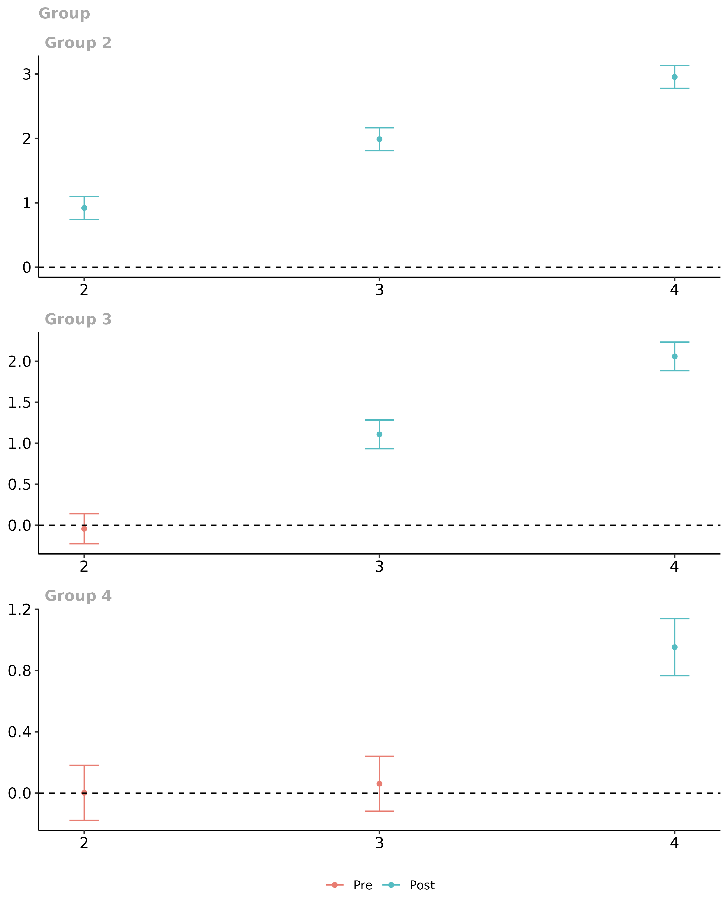
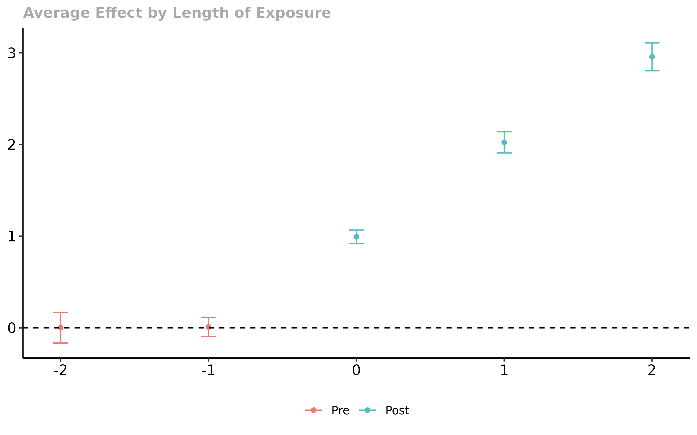
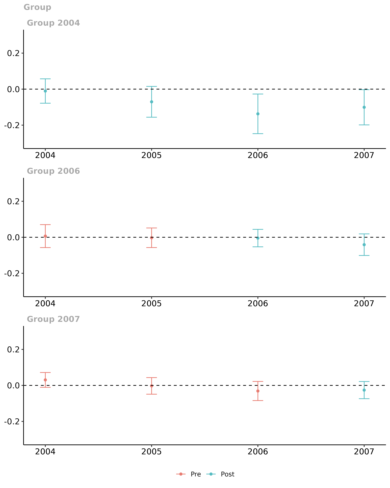
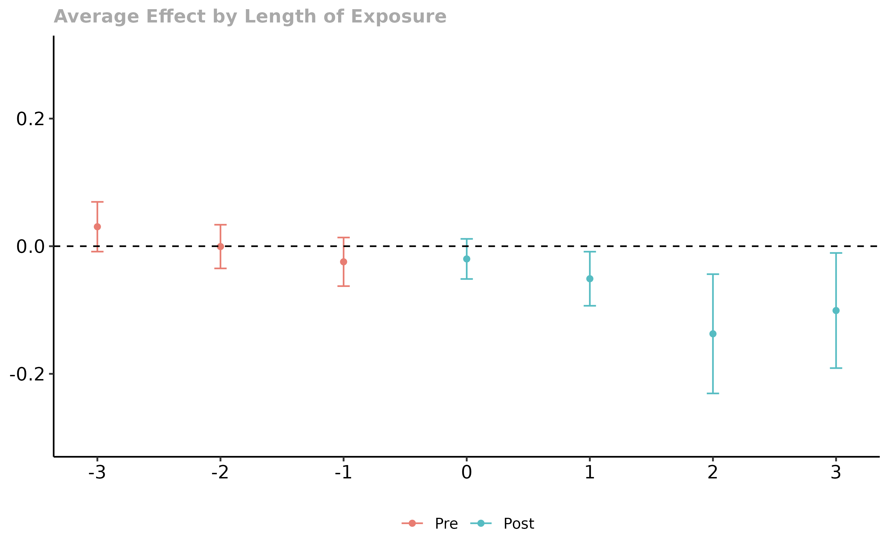
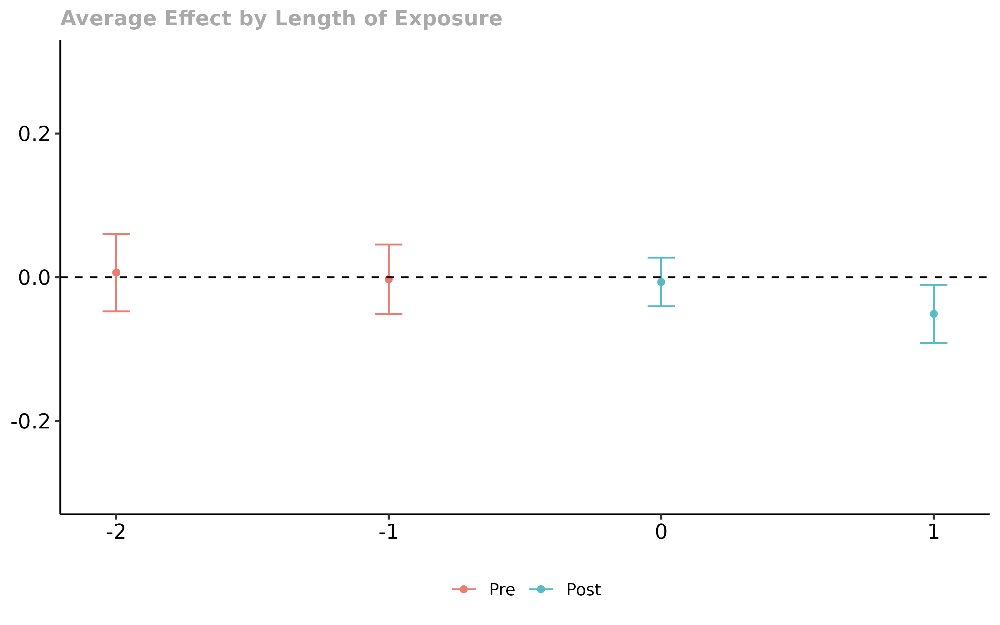

Getting Started with the did Package
Brantly Callaway and Pedro H.C. Sant’Anna
2023-08-29
Source:vignettes/did-basics.Rmd
did-basics.RmdIntroduction
This vignette discusses the basics of using Difference-in-Differences (DiD) designs to identify and estimate the average effect of participating in a treatment with a particular focus on tools from the did package. The background article for it is Callaway and Sant’Anna (2021), “Difference-in-Differences with Multiple Time Periods”.
The did package allows for multiple periods and variation in treatment timing
The did package allows the parallel trends assumption to hold conditional on covariates
Treatment effect estimates coming from the did package do not suffer from any of the drawbacks associated with two-way fixed effects regressions or event study regressions when there are multiple periods / variation in treatment timing
The did package can deliver disaggregated group-time average treatment effects as well as event-study type estimates (treatment effects parameters corresponding to different lengths of exposure to the treatment) and overall treatment effect estimates.
We use some notation in this vignette that is fully explained in our Introduction to DiD with Multiple Time Periods vignette.
Examples with simulated data
Let’s start with a really simple example with simulated data. Here, there are going to be 4 time periods. There are 4000 units in the treated group that are randomly (with equal probability) assigned to first participate in the treatment (a group) in each time period. And there are 4000 ``never treated’’ units. The data generating process for untreated potential outcomes
\[ Y_{it}(0) = \theta_t + \eta_i + X_i'\beta_t + v_{it} \]
This is an example of a very simple model for untreated potential outcomes that is compatible with a conditional parallel trends assumption. In particular,
We consider the case where \(\eta_i\) can be distributed differently across groups. This means that comparisons of outcomes in levels between treated and untreated units will not deliver an average treatment effect parameter.
-
Next, notice that \[ \Delta Y_{it}(0) = (\theta_t - \theta_{t-1}) + X_i'(\beta_t - \beta_{t-1}) + \Delta v_{it} \]
so that the path of outcomes depends on covariates. And, in general, unconditional parallel trends is not valid in this setup unless either (i) the mean of the covariates is the same across groups (e.g., when treatment groups are independent of covariates), or (ii) \(\beta_t = \beta_{t-1} = \cdots = \beta_{1}\) (this is the case when the path of untreated potential outcomes doesn’t actually depend on covariates).
-
In order to think about treatment effects, we also use the following stylized model for treated potential outcomes \[ Y_{it}(g) = Y_{it}(0) + \mathbf{1}\{t \geq g\} (e+1) + ( u_{it} - v_{it}) \]
where \(e := t-g\) is the event time (i.e., the difference between the current time period and the time when a unit becomes treated), and the last term just allows for the error terms to be different for treated and untreated potential outcomes. It immediately follows that, in this particular example, \[ATT(g,t) = e+1\] for all post-treatment periods \(t \ge g\).
In other words, the average effect of participating in the treatment for units in group \(g\) is equal to their length of exposure plus one. Note that, for simplicity, we are considering the case where treatment effects are homogeneous across groups. Also, in this setup, units do not anticipate their treatment status, so the no-anticipation assumption is also satisfied.
-
For the simulations, we also set
-
\(\theta_t = \beta_t = t\) for
\(t=1,\ldots,4\)
- \(\eta_i \sim N(G_i, 1)\) where \(G_i\) is which group an individual belongs to,
- \(X_i \sim N( \mu_{D_i}, 1)\) where \(\mu_{D_i} = 1\) for never treated units and 0 otherwise,
-
\(v_{it} \sim N(0,1)\), and \(u_{it} \sim N(0,1)\).
- Also, all random variables are drawn independently of each other.
-
\(\theta_t = \beta_t = t\) for
\(t=1,\ldots,4\)
Estimating Group-Time Average Treatment Effects
Building the dataset
# set seed so everything is reproducible
set.seed(1814)
# generate dataset with 4 time periods
time.periods <- 4
# add dynamic effects
sp$te.e <- 1:time.periods
# generate data set with these parameters
# here, we dropped all units who are treated in time period 1 as they do not help us recover ATT(g,t)'s.
dta <- build_sim_dataset(sp)
# How many observations remained after dropping the ``always-treated'' units
nrow(dta)
#> [1] 15916
#This is what the data looks like
head(dta)
#> # A tibble: 6 × 7
#> G X id cluster period Y treat
#> <dbl> <dbl> <int> <int> <dbl> <dbl> <dbl>
#> 1 3 -0.876 1 5 1 5.56 1
#> 2 3 -0.876 1 5 2 4.35 1
#> 3 3 -0.876 1 5 3 7.13 1
#> 4 3 -0.876 1 5 4 6.24 1
#> 5 2 -0.874 2 36 1 -3.66 1
#> 6 2 -0.874 2 36 2 -1.27 1Estimating Group-Time Average Treatment Effects
The main function to estimate group-time average treatment effects is
the att_gt function. See
documentation here. The most basic call to att_gt is
given in the following
# estimate group-time average treatment effects using att_gt method
example_attgt <- att_gt(yname = "Y",
tname = "period",
idname = "id",
gname = "G",
xformla = ~X,
data = dta
)
# summarize the results
summary(example_attgt)
#>
#> Call:
#> att_gt(yname = "Y", tname = "period", idname = "id", gname = "G",
#> xformla = ~X, data = dta)
#>
#> Reference: Callaway, Brantly and Pedro H.C. Sant'Anna. "Difference-in-Differences with Multiple Time Periods." Journal of Econometrics, Vol. 225, No. 2, pp. 200-230, 2021. <https://doi.org/10.1016/j.jeconom.2020.12.001>, <https://arxiv.org/abs/1803.09015>
#>
#> Group-Time Average Treatment Effects:
#> Group Time ATT(g,t) Std. Error [95% Simult. Conf. Band]
#> 2 2 0.9209 0.0640 0.7432 1.0986 *
#> 2 3 1.9875 0.0638 1.8102 2.1648 *
#> 2 4 2.9552 0.0636 2.7786 3.1318 *
#> 3 2 -0.0433 0.0659 -0.2264 0.1399
#> 3 3 1.1080 0.0632 0.9325 1.2836 *
#> 3 4 2.0590 0.0628 1.8845 2.2335 *
#> 4 2 0.0023 0.0647 -0.1774 0.1820
#> 4 3 0.0615 0.0645 -0.1176 0.2407
#> 4 4 0.9523 0.0671 0.7660 1.1387 *
#> ---
#> Signif. codes: `*' confidence band does not cover 0
#>
#> P-value for pre-test of parallel trends assumption: 0.60857
#> Control Group: Never Treated, Anticipation Periods: 0
#> Estimation Method: Doubly RobustThe summary of example_attgt provides estimates of the
group-time average treatment effects in the column labeled
att, and the corresponding bootstrapped-based standard
errors are given in the column se. The corresponding groups
and times are given in the columns group and
time. Under the no-anticipation and parallel trends
assumptions, group-time average treatment effects are identified in
periods when \(t \geq g\) (i.e.,
post-treatment periods for each group). The table also reports pseudo
group-time average treatment effects when \(t
< g\) (i.e., pre-treatment periods for group \(g\)). These can be used as a pre-test for
the parallel trends assumption (as long as we assume that the
no-anticipation assumption indeed holds). In addition, the results of a
Wald pre-test of the parallel trends assumption is reported in the
summary of the results. A much more detailed
discussion of using the did package for pre-testing is
available here.
Next, we’ll demonstrate how to plot group-time average treatment
effects. To plot these, use the ggdid function which builds
off the ggplot2 package.
# plot the results
ggdid(example_attgt)
The resulting figure is one that contains separate plots for each group. Notice in the figure above, the first plot is labeled “Group 2”, the second “Group 3”, etc. Then, the figure contains estimates of group-time average treatment effects for each group in each time period along with a simultaneous confidence interval. The red dots in the plots are pre-treatment pseudo group-time average treatment effects and are most useful for pre-testing the parallel trends assumption. The blue dots are post-treatment group-time average treatment effects and should be interpreted as the average effect of participating in the treatment for units in a particular group at a particular point in time.
Other features of the did package
The above discussion covered only the most basic case for using the
did package. There are a number of simple extensions that
are useful in applications.
Adjustments for Multiple Hypothesis Testing
By default, the did package reports simultaneous
confidence bands in plots of group-time average treatment effects with
multiple time periods – these are confidence bands that are robust to
multiple hypothesis testing [essentially, the idea here is to use the
same standard errors but make an adjustment to the critical value to
account for multiple testing – in the example in this section, the
critical value for a 95% uniform confidence band is 2.78 instead of
1.96]. You can turn this off and compute analytical standard errors and
corresponding figures with pointwise confidence intervals by
setting bstrap=FALSE, cband=FALSE in the call to
att_gt…but we don’t recommend it!
Aggregating group-time average treatment effects
In many applications, there can be a large number of groups and time
periods. In this case, it may be infeasible to interpret plots of
group-time average treatment effects. The did package
provides a number of ways to aggregate group-time average treatment
effects using the aggte function.
Simple Aggregation
One idea that is likely to immediately come to mind is to just return
a weighted average of all group-time average treatment effects with
weights proportional to the group size. This is available by calling the
aggte function with type = simple.
agg.simple <- aggte(example_attgt, type = "simple")
summary(agg.simple)
#>
#> Call:
#> aggte(MP = example_attgt, type = "simple")
#>
#> Reference: Callaway, Brantly and Pedro H.C. Sant'Anna. "Difference-in-Differences with Multiple Time Periods." Journal of Econometrics, Vol. 225, No. 2, pp. 200-230, 2021. <https://doi.org/10.1016/j.jeconom.2020.12.001>, <https://arxiv.org/abs/1803.09015>
#>
#>
#> ATT Std. Error [ 95% Conf. Int.]
#> 1.6583 0.0335 1.5927 1.724 *
#>
#>
#> ---
#> Signif. codes: `*' confidence band does not cover 0
#>
#> Control Group: Never Treated, Anticipation Periods: 0
#> Estimation Method: Doubly RobustThis sort of aggregation immediately avoids the negative weights
issue that two-way fixed effects regressions can suffer from, but we
often think that there are better alternatives. In particular,
this simple aggregation tends to overweight the effect of
early-treated groups simply because we observe more of them during
post-treatment periods. We think there are likely to be better
alternatives in most applications.
Dynamic Effects and Event Studies
One of the most common alternative approaches is to aggregate group-time effects into an event study plot. Group-time average treatment effects can immediately be averaged into average treatment effects at different lengths of exposure to the treatment using the following code:
agg.es <- aggte(example_attgt, type = "dynamic")
summary(agg.es)
#>
#> Call:
#> aggte(MP = example_attgt, type = "dynamic")
#>
#> Reference: Callaway, Brantly and Pedro H.C. Sant'Anna. "Difference-in-Differences with Multiple Time Periods." Journal of Econometrics, Vol. 225, No. 2, pp. 200-230, 2021. <https://doi.org/10.1016/j.jeconom.2020.12.001>, <https://arxiv.org/abs/1803.09015>
#>
#>
#> Overall summary of ATT's based on event-study/dynamic aggregation:
#> ATT Std. Error [ 95% Conf. Int.]
#> 1.9904 0.0385 1.9149 2.0659 *
#>
#>
#> Dynamic Effects:
#> Event time Estimate Std. Error [95% Simult. Conf. Band]
#> -2 0.0023 0.0665 -0.1650 0.1697
#> -1 0.0105 0.0411 -0.0928 0.1138
#> 0 0.9929 0.0295 0.9186 1.0672 *
#> 1 2.0231 0.0460 1.9074 2.1388 *
#> 2 2.9552 0.0603 2.8034 3.1070 *
#> ---
#> Signif. codes: `*' confidence band does not cover 0
#>
#> Control Group: Never Treated, Anticipation Periods: 0
#> Estimation Method: Doubly Robust
ggdid(agg.es)
In this figure, the x-axis is the length of exposure to the treatment. Length of exposure equal to 0 provides the average effect of participating in the treatment across groups in the time period when they first participate in the treatment (instantaneous treatment effect). Length of exposure equal to -1 corresponds to the time period before groups first participate in the treatment, and length of exposure equal to 1 corresponds to the first time period after initial exposure to the treatment.
As we would expect based on the data that we generated, it looks like parallel trends holds in pre-treatment periods and the effect of participating in the treatment is increasing with length of exposure of the treatment.
The Overall ATT here averages the average treatment effects across all lengths of exposure to the treatment.
Group-Specific Effects
Another idea is to look at average effects specific to each group. It is also straightforward to aggregate group-time average treatment effects into group-specific average treatment effects using the following code:
agg.gs <- aggte(example_attgt, type = "group")
summary(agg.gs)
#>
#> Call:
#> aggte(MP = example_attgt, type = "group")
#>
#> Reference: Callaway, Brantly and Pedro H.C. Sant'Anna. "Difference-in-Differences with Multiple Time Periods." Journal of Econometrics, Vol. 225, No. 2, pp. 200-230, 2021. <https://doi.org/10.1016/j.jeconom.2020.12.001>, <https://arxiv.org/abs/1803.09015>
#>
#>
#> Overall summary of ATT's based on group/cohort aggregation:
#> ATT Std. Error [ 95% Conf. Int.]
#> 1.488 0.0354 1.4186 1.5575 *
#>
#>
#> Group Effects:
#> Group Estimate Std. Error [95% Simult. Conf. Band]
#> 2 1.9545 0.0546 1.8264 2.0827 *
#> 3 1.5835 0.0528 1.4595 1.7076 *
#> 4 0.9523 0.0664 0.7964 1.1082 *
#> ---
#> Signif. codes: `*' confidence band does not cover 0
#>
#> Control Group: Never Treated, Anticipation Periods: 0
#> Estimation Method: Doubly Robust
ggdid(agg.gs)
In this figure, the y-axis is categorized by group. The x-axis provides estimates of the average effect of participating in the treatment for units in each group averaged across all time periods after that group becomes treated. In our example, the average effect of participating in the treatment is largest for group 2 – this is because the effect of treatment here increases with length of exposure to the treatment, and they are the group that is exposed to the treatment for the longest.
The Overall ATT averages the group-specific treatment effects across groups. In our view, this parameter is a leading choice as an overall summary effect of participating in the treatment. It is the average effect of participating in the treatment that was experienced across all units that participate in the treatment in any period. In this sense, it has a similar interpretation to the ATT in the textbook case where there are exactly two periods and two groups.
Calendar Time Effects
Finally, the did package allows aggregations across
different time periods. To do this
agg.ct <- aggte(example_attgt, type = "calendar")
summary(agg.ct)
#>
#> Call:
#> aggte(MP = example_attgt, type = "calendar")
#>
#> Reference: Callaway, Brantly and Pedro H.C. Sant'Anna. "Difference-in-Differences with Multiple Time Periods." Journal of Econometrics, Vol. 225, No. 2, pp. 200-230, 2021. <https://doi.org/10.1016/j.jeconom.2020.12.001>, <https://arxiv.org/abs/1803.09015>
#>
#>
#> Overall summary of ATT's based on calendar time aggregation:
#> ATT Std. Error [ 95% Conf. Int.]
#> 1.4808 0.0364 1.4094 1.5522 *
#>
#>
#> Time Effects:
#> Time Estimate Std. Error [95% Simult. Conf. Band]
#> 2 0.9209 0.0651 0.7612 1.0806 *
#> 3 1.5491 0.0521 1.4212 1.6770 *
#> 4 1.9724 0.0493 1.8514 2.0933 *
#> ---
#> Signif. codes: `*' confidence band does not cover 0
#>
#> Control Group: Never Treated, Anticipation Periods: 0
#> Estimation Method: Doubly Robust
ggdid(agg.ct)
In this figure, the x-axis is the time period and the estimates along the y-axis are the average effect of participating in the treatment in a particular time period for all groups that participated in the treatment in that time period.
Small Group Sizes
Small group sizes can sometimes cause estimation problems in the
did package. To give an example, if there are any groups
that have fewer observations than the number of covariates in the model,
the code will error. The did package reports a warning if
there are any groups that have fewer than 5 observations.
In addition, statistical inference, particularly on group-time average treatment may become more tenuous with small groups. For example, the effective sample size for estimating the change in outcomes over time for individuals in a particular group is equal to the number of observations in that group and asymptotic results are unlikely to provide good approximations to the sampling distribution of group-time average treatment effects when the number of units in a group is small. In these cases, one should be very cautious about interpreting the \(ATT(g,t)\) results for these small groups.
A reasonable alternative approach in this case is to just focus on
aggregated treatment effect parameters (i.e., to run
aggte(..., type = "group") or
aggte(...,type = "dynamic")). For each of these cases, the
effective sample size is the total number of units that are ever
treated. As long as the total number of ever treated units is “large”
(which should be the case for many DiD application), then the
statistical inference results provided by the did package
should be more stable.
Selecting Alternative Control Groups
By default, the did package uses the group of units that
never participate in the treatment as the control group. In this case,
if there is no group that never participates, then the did
package will drop the last period and set units that do not become
treated until the last period as the control group (this will also throw
a warning). The other option for the control group is to use the “not
yet treated”. The “not yet treated” include the never treated as well as
those units that, for a particular point in time, have not been treated
yet (though they eventually become treated). This group is at least as
large as the never treated group though it changes across time periods.
To use the “not yet treated” as the control, set the option
control_group="notyettreated".
Repeated cross sections
The did package can also work with repeated cross
section rather than panel data. If the data is repeated cross sections,
simply set the option panel = FALSE. In this case,
idname is also ignored. From a usage standpoint, everything
else is identical to the case with panel data.
Unbalanced Panel Data
By default, the did package takes in panel data and, if
it is not balanced, coerces it into being a balanced panel by dropping
units with observations that are missing in any time period. However, if
the user specifies the option
allow_unbalanced_panel = TRUE, then the did
package will not coerce the data into being balanced. Practically, the
main cost here is that the computation time will increase in this case.
We also recommend that users think carefully about why they have an
unbalanced panel before proceeding this direction.
Alternative Estimation Methods
The did package implements all the \(2 \times 2\) DiD estimators that are in the
DRDID package. By default, the did package
uses “doubly robust” estimators that are based on first step linear
regressions for the outcome variable and logit for the generalized
propensity score. The other options are “ipw” for inverse probability
weighting and “reg” for regression.
example_attgt_reg <- att_gt(yname = "Y",
tname = "period",
idname = "id",
gname = "G",
xformla = ~X,
data = data,
est_method = "reg"
)
summary(example_attgt_reg)The argument est_method is also available to pass in a
custom function for estimating DiD with 2 periods and 2 groups. See its documentation for more
details. Fair Warning: this is very advanced use of
the did package and should be done with caution.
An example with real data
Next, we use a subset of data that comes from Callaway and Sant’Anna (2020). This is a dataset that contains county-level teen employment rates from 2003-2007. The data can be loaded by
data(mpdta)mpdta is a balanced panel with 2500 observations. And
the dataset looks like
head(mpdta)
#> year countyreal lpop lemp first.treat treat
#> 866 2003 8001 5.896761 8.461469 2007 1
#> 841 2004 8001 5.896761 8.336870 2007 1
#> 842 2005 8001 5.896761 8.340217 2007 1
#> 819 2006 8001 5.896761 8.378161 2007 1
#> 827 2007 8001 5.896761 8.487352 2007 1
#> 937 2003 8019 2.232377 4.997212 2007 1Data Requirements
In particular applications, the dataset should look like this with the key parts being:
The dataset should be in long format – each row corresponds to a particular unit at a particular point in time. Sometimes panel data is in wide format – each row contains all the information about a particular unit in all time periods. To convert from wide to long in
R, one can use thetidyr::pivot_longerfunction. Here is an exampleThere needs to be an id variable. In
mpdta, it is the variablecountyreal. This should not vary over time for particular units. The name of this variable is passed to methods in thedidpackage by setting, for example,idname = "countyreal"There needs to be a time variable. In
mpdta, it is the variableyear. The name of this variable is passed to methods in thedidpackage by setting, for example,tname = "year"In this application, the outcome is
lemp. The name of this variable is passed to methods in thedidpackage by setting, for example,yname = "lemp"There needs to be a group variable. In
mpdta, it is the variablefirst.treat. This is the time period when an individual first becomes treated. For individuals that are never treated, this variable should be set equal to 0. The name of this variable is passed to methods in thedidpackage by setting, for example,gname = "first.treat"The
didpackage allows for incorporating covariates so that the parallel trends assumption holds only after conditioning on these covariates. Inmpdta,lpopis the log of county population. Thedidpackage requires that covariates be time-invariant. For time varying covariates, thedidpackage sets the value of the covariate to be equal to the value of the covariate in the “base period” where, in post-treatment periods the base period is the period immediately before observations in a particular group become treated (when there is anticipation, it is before anticipation effects start too), and in pre-treatment periods the base period is the period right before the current period. Covariates are passed as a formula to thedidpackage by setting, for example,xformla = ~lpop. For estimators under unconditional parallel trends, thexformlaargument can be left blank or can be set asxformla = ~1to only include a constant.
The Effect of the Minimum Wage on Youth Employment
Next, we walk through a straightforward, but realistic way to use the
did package to carry out an application.
Side Comment: This is just an example of how to use our method in a real-world setup. To really evaluate the effect of the minimum wage on teen employment, one would need to be more careful along a number of dimensions. Thus, results displayed here should be interpreted as illustrative only.
We’ll consider two cases. For the first case, we will not condition on any covariates. For the second, we will condition on the log of county population (in a “real” application, one might want to condition on more covariates).
# estimate group-time average treatment effects without covariates
mw.attgt <- att_gt(yname = "lemp",
gname = "first.treat",
idname = "countyreal",
tname = "year",
xformla = ~1,
data = mpdta
)
# summarize the results
summary(mw.attgt)
#>
#> Call:
#> att_gt(yname = "lemp", tname = "year", idname = "countyreal",
#> gname = "first.treat", xformla = ~1, data = mpdta)
#>
#> Reference: Callaway, Brantly and Pedro H.C. Sant'Anna. "Difference-in-Differences with Multiple Time Periods." Journal of Econometrics, Vol. 225, No. 2, pp. 200-230, 2021. <https://doi.org/10.1016/j.jeconom.2020.12.001>, <https://arxiv.org/abs/1803.09015>
#>
#> Group-Time Average Treatment Effects:
#> Group Time ATT(g,t) Std. Error [95% Simult. Conf. Band]
#> 2004 2004 -0.0105 0.0243 -0.0782 0.0572
#> 2004 2005 -0.0704 0.0307 -0.1560 0.0151
#> 2004 2006 -0.1373 0.0395 -0.2473 -0.0272 *
#> 2004 2007 -0.1008 0.0351 -0.1986 -0.0030 *
#> 2006 2004 0.0065 0.0228 -0.0572 0.0702
#> 2006 2005 -0.0028 0.0195 -0.0571 0.0516
#> 2006 2006 -0.0046 0.0174 -0.0531 0.0439
#> 2006 2007 -0.0412 0.0215 -0.1012 0.0187
#> 2007 2004 0.0305 0.0148 -0.0107 0.0717
#> 2007 2005 -0.0027 0.0165 -0.0488 0.0434
#> 2007 2006 -0.0311 0.0191 -0.0842 0.0221
#> 2007 2007 -0.0261 0.0171 -0.0738 0.0217
#> ---
#> Signif. codes: `*' confidence band does not cover 0
#>
#> P-value for pre-test of parallel trends assumption: 0.16812
#> Control Group: Never Treated, Anticipation Periods: 0
#> Estimation Method: Doubly Robust
# plot the results
# set ylim so that all plots have the same scale along y-axis
ggdid(mw.attgt, ylim = c(-.3, .3))
There are a few things to notice in this case
There does not appear to be much evidence against the parallel trends assumption. One fails to reject using the Wald test reported in
summary; likewise the uniform confidence bands cover 0 in all pre-treatment periods.There is some evidence of negative effects of the minimum wage on employment. Two group-time average treatment effects are negative and statistically different from 0. These results also suggest that it may be helpful to aggregate the group-time average treatment effects.
# aggregate the group-time average treatment effects
mw.dyn <- aggte(mw.attgt, type = "dynamic")
summary(mw.dyn)
#>
#> Call:
#> aggte(MP = mw.attgt, type = "dynamic")
#>
#> Reference: Callaway, Brantly and Pedro H.C. Sant'Anna. "Difference-in-Differences with Multiple Time Periods." Journal of Econometrics, Vol. 225, No. 2, pp. 200-230, 2021. <https://doi.org/10.1016/j.jeconom.2020.12.001>, <https://arxiv.org/abs/1803.09015>
#>
#>
#> Overall summary of ATT's based on event-study/dynamic aggregation:
#> ATT Std. Error [ 95% Conf. Int.]
#> -0.0772 0.0212 -0.1188 -0.0357 *
#>
#>
#> Dynamic Effects:
#> Event time Estimate Std. Error [95% Simult. Conf. Band]
#> -3 0.0305 0.0153 -0.0085 0.0695
#> -2 -0.0006 0.0134 -0.0348 0.0337
#> -1 -0.0245 0.0149 -0.0626 0.0136
#> 0 -0.0199 0.0123 -0.0514 0.0115
#> 1 -0.0510 0.0166 -0.0933 -0.0086 *
#> 2 -0.1373 0.0366 -0.2307 -0.0438 *
#> 3 -0.1008 0.0353 -0.1910 -0.0106 *
#> ---
#> Signif. codes: `*' confidence band does not cover 0
#>
#> Control Group: Never Treated, Anticipation Periods: 0
#> Estimation Method: Doubly Robust
ggdid(mw.dyn, ylim = c(-.3, .3))
These continue to be simultaneous confidence bands for dynamic effects. The results are broadly similar to the ones from the group-time average treatment effects: one fails to reject parallel trends in pre-treatment periods and it looks like somewhat negative effects of the minimum wage on youth employment.
One potential issue with these dynamic effect estimators is that the composition of the groups changes with different lengths of exposure in the event study plots. For example, for the group of states who increased their minimum wage in 2007, we can only identify the instantaneous average effect of the minimum wage (\(e=0\)), whereas for states that raised their minimum wage in 2004 (2006), we can identify the average effect of the minimum wage on event-times \(e=0,1,2,3\) (\(e=0,1\)). When computing the event-study plot for \(e=0\), we would aggregate the effects for all three groups, but this is not the case when \(e=1,2,3\). If the effects of the minimum wage are systematically different across groups (here, there is not much evidence of this as the effect for all groups seems to be close to 0 on impact and perhaps becoming more negative over time), then this can lead to confounding dynamics and selective treatment timing among different groups.
One way to combat this is to balance the sample by (i) only including
groups that are exposed to the treatment for at least a certain number
of time periods and (ii) only look at dynamic effects in those time
periods. In the did package, one can do this by specifying
the balance_e option. Here, we set
balance_e = 1 – what this does is to only consider groups
of states that are treated in 2004 and 2006 (so we can compute
event-study-type parameters for them for \(e=0,1\)), drops the group treated in 2007
(as we can not compute the event-study-type parameter with \(e=1\) for this group)), and then only looks
at instantaneous average effects and the average effect one period after
states raised the minimum wage.
mw.dyn.balance <- aggte(mw.attgt, type = "dynamic", balance_e = 1)
summary(mw.dyn.balance)
#>
#> Call:
#> aggte(MP = mw.attgt, type = "dynamic", balance_e = 1)
#>
#> Reference: Callaway, Brantly and Pedro H.C. Sant'Anna. "Difference-in-Differences with Multiple Time Periods." Journal of Econometrics, Vol. 225, No. 2, pp. 200-230, 2021. <https://doi.org/10.1016/j.jeconom.2020.12.001>, <https://arxiv.org/abs/1803.09015>
#>
#>
#> Overall summary of ATT's based on event-study/dynamic aggregation:
#> ATT Std. Error [ 95% Conf. Int.]
#> -0.0288 0.0132 -0.0547 -0.0028 *
#>
#>
#> Dynamic Effects:
#> Event time Estimate Std. Error [95% Simult. Conf. Band]
#> -2 0.0065 0.0226 -0.0474 0.0605
#> -1 -0.0028 0.0203 -0.0510 0.0455
#> 0 -0.0066 0.0142 -0.0404 0.0273
#> 1 -0.0510 0.0170 -0.0915 -0.0104 *
#> ---
#> Signif. codes: `*' confidence band does not cover 0
#>
#> Control Group: Never Treated, Anticipation Periods: 0
#> Estimation Method: Doubly Robust
ggdid(mw.dyn.balance, ylim = c(-.3, .3))
Finally, we can run all the same results including a covariate. In this application the results turn out to be nearly identical, and here we provide just the code for estimating the group-time average treatment effects while including covariates. The other steps are otherwise the same.
mw.attgt.X <- att_gt(yname = "lemp",
gname = "first.treat",
idname = "countyreal",
tname = "year",
xformla = ~lpop,
data = mpdta
)Common Issues with the did package
We update this section with common issues that people run into when
using the did package. Please feel free to contact us with
questions or comments.
- The
didpackage is only built to handle staggered treatment adoption designs. This means that once an individual becomes treated, they remain treated in all subsequent periods.